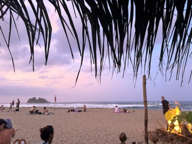

Today's focus: rose colored glasses
Perception is reality. The frame in which we choose to interpret events in our lives decides who we are and what are lives are. Choosing to see the positive in inconveniences allows me to shape my perspective to appreciate the good along with the bad. So whenever I feel disappointment or frustration I list all the things that went wrong and decide to wear my "rose colored glasses" to decide how I feel. For ex. maybe losing my job wasn't terrible because I actually wasn't passionate about what I was doing and now I have the time to take this full-time course to eventually find a better one
Opportunities for gratitude:
- less than ideal weather
- uncertainty
- new experiences
- disappointment
- the list goes on...
Now put on your rose colored glasses & write some problems (and how they really aren't problems)
Rainy days
Terrible weather helps me appreciate beautiful days. I'm grateful to watch the sun set and (occasionally) rise. It's my favorite way to spend an evening or while driving home.

Winter
I'd rather be hot than cold. Winter reminds me to never complain about the heat.
Bordeom
Boredom is a luxury. It affords me the time to soak in my surroundings